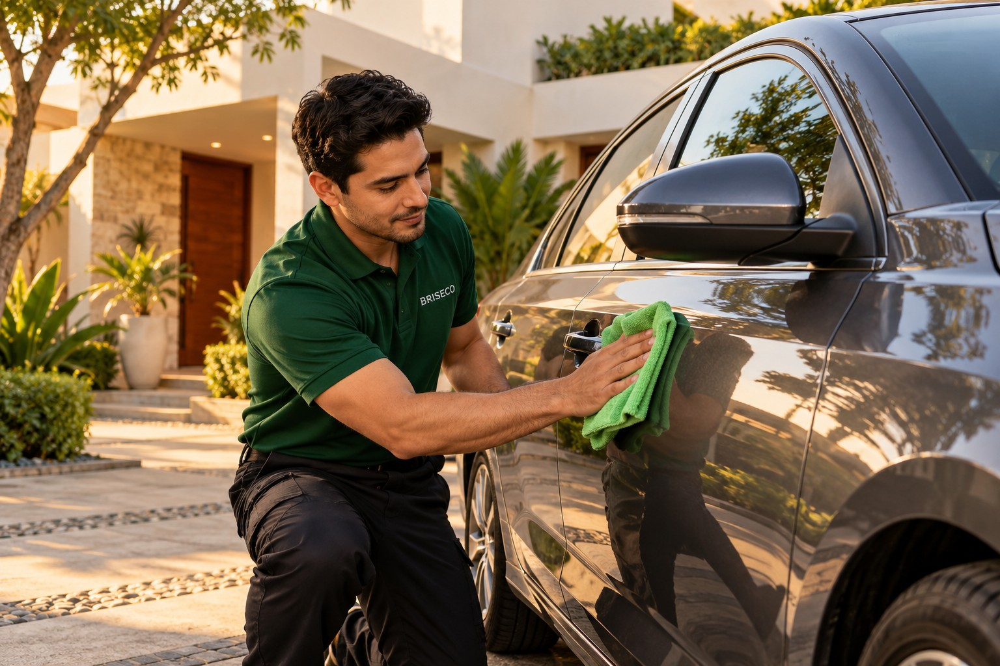
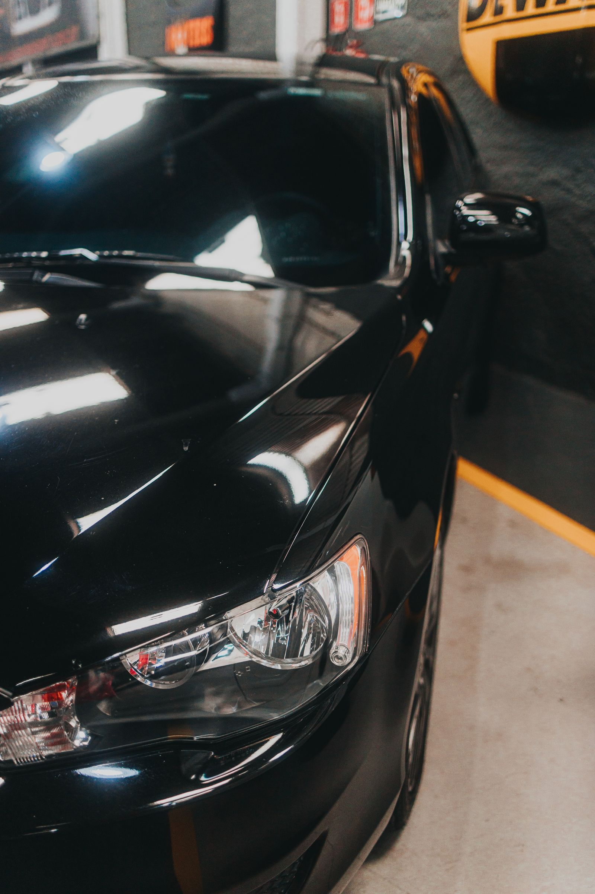

SERVICIO A DOMICILIO
Tu auto, mi atención.
En tu espacio.
Una opción exterior por cita para quienes prefieren recibir ayuda en su propio espacio. Conocemos tu zona y el estado del auto antes de definir el trabajo, la fecha y el precio.


ATENCIÓN POR CITA
Un proceso claro desde el primer mensaje.
La atención se concentra en el exterior del vehículo cuando presenta polvo o suciedad ligera. Cada consulta empieza con una revisión de la zona, el tipo de auto y lo que necesitas.
Con esa información podemos explicar qué trabajo corresponde, cuánto tiempo puede tomar y cuál sería el costo total antes de acordar una visita.
- Revisión inicial de zona y tipo de auto.
- Cotización y alcance antes de aceptar.
- Aplicación por secciones y revisión final.
ASÍ FUNCIONA
De la consulta a la cita.
Cuéntanos lo necesario
Indica tu colonia, tipo de auto y cómo luce la superficie. Una descripción clara ayuda a saber si esta opción te conviene.
Revisamos los detalles
Confirmamos si llegamos a tu zona, qué incluiría la aplicación, cuánto costaría y qué horarios hay disponibles.
Acordamos la cita
Si aceptas la propuesta, elegimos un día. En la visita se trabaja por secciones y se revisa el resultado contigo.
EL ALCANCE DEL SERVICIO
El cuidado adecuado empieza con una revisión.
La aplicación propuesta funciona como mantenimiento exterior para polvo y suciedad ligera. Si hay lodo o arena abundante, primero se necesita un lavado apropiado para retirar esas partículas.
La atención se consulta desde Tula de Allende, Hidalgo. Tu colonia, el tamaño del vehículo, su estado y el traslado ayudan a definir la cobertura y la cotización.

ANTES DE ELEGIR FECHA
Una cotización que puedas entender.
Cobertura
Indícanos tu colonia o una referencia cercana para revisar el traslado y confirmar si el servicio puede llegar a tu ubicación.
Estado del auto
Cuéntanos si se trata de polvo ligero u otro tipo de suciedad. Esta revisión define si la aplicación es adecuada.
Horario y precio
Te compartimos el alcance, el costo total y las fechas posibles. La cita se confirma después de que aceptes estos datos.
¿TE CONVIENE UNA CITA?
Cuéntame tu zona y tu auto.
Te confirmo si puedo atenderte, qué incluye y cuánto costaría.